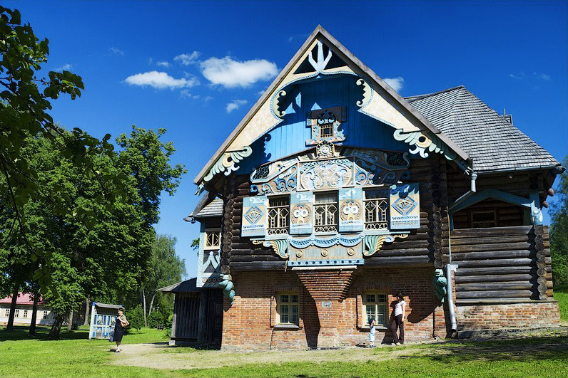
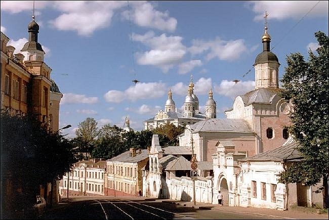
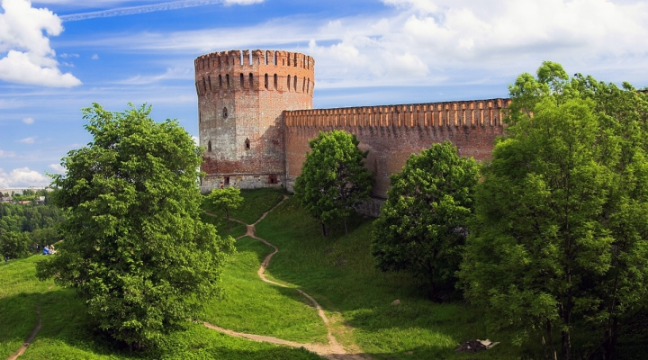
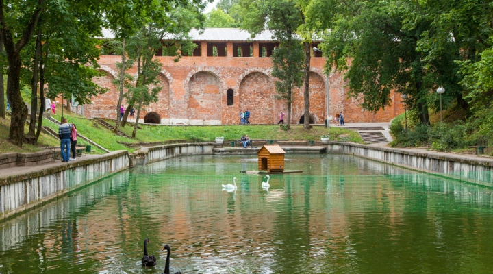
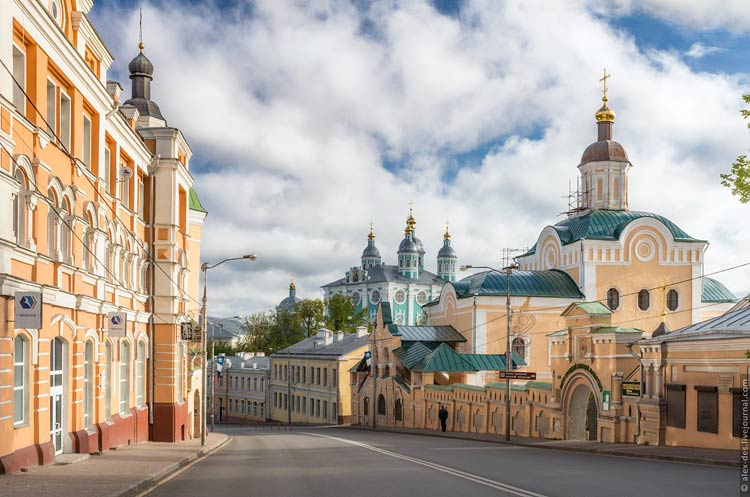
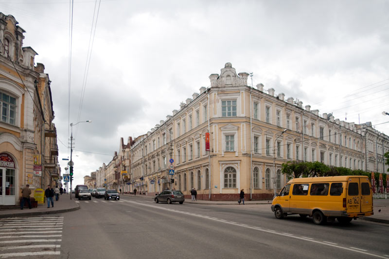

Смоленск — один из древнейших русских городов. Он возник на древнем торговом пути и "из варяг в греки" как город кривичского союза племен. Первое в истории датированное упоминание Смоленска в Устюжском (Архангелогородском) летописном своде относится к 863 г.: по свидетельству летописца, он был тогда «град велик и мног людьми».
В истории Руси Смоленск занимает важное место. С образованием Древнерусского государства — Киевской Руси — Смоленск вошел в его состав (в результате похода дружины Новгородского князя Олега на Киев в 882 г.). Существуют разные версии, объясняющие название города, одна из них связывает его с занятием жителей: здесь купцы, плававшие «из варяг в греки» и «на грек в варяги», ремонтировали (смолили) лодки. Расположение на великом торговом пути предопределило важное место Смоленска в истории Киевской Руси. По словам Константина Багрянородного (византийский император, автор сочинений, содержащих важные сведения о русско-византийских отношениях Xв.), «каждую весну в Киев приходили торговые караваны с севера — из Новгорода, Смоленска, Любеча и других юродов русских — и отсюда направлялись в Константинополь». Город Смоленск был крупным пунктом торговли и ремесленного производства, военной крепостью.
Археологические раскопки Гнездонских курганов (см. «Гнездово») и в самом городе свидетельствуют о высоком развитии в Смоленске ремесла и о существовании письменности на Руси до введения христианства. В культурном слое древнего Смоленска обнаружены берестяные грамоты. В политической жизни города большую роль играло вече. В XII — XIII вв. на Смоленской земле утвердились князья одной из главных ветвей потомка Мономаха — сыновья и внуки сына Мономаха Мстислава Владимировича. Выдающимся политиком был внук Владимира Мономаха Ростислав Мстиславич (с 1127 г. в течение 34 лет княжил в Смоленске). К концу XII в. в руках Смоленских князей оказались все основные ключи древнерусской политики.
К сожалению, смоленское летописание не сохранилось, xотя историки не сомневаются, что летопись здесь велась. Смоленские сообщения встречаются в южной Ипатьевской летописи, в Новгородских летописях, в Радзивилловской летописи составленной, вероятно, в Новгороде или Владимире. Среди других источников по истории Смоленска можно назвать несколько торговых и епископных грамот и единичные памятники литературы. Смоленск XII — начала XIII вв.— очень крупный город Древней Руси. Б. В. Сапунов, реконструируя число жителей в домонгольской Руси, считал, что в городе Смоленске проживало 30—35 тыс. человек (для сравнения: в Киеве — 50—70 тыс., в Новгороде даже меньше — 20—30 тыс.). По количеству монастырей — центров культуры и просвещения — г.Смоленск занимал 4-е место после Киева, Новгорода (по 17 монастырей), Владимира на Клязьме (6 монастырей). По сведениям Голубинского, в Смоленске было 5 монастырей, по другим — 8.
В 1136 г. князем Ростиславом Мстиславичем в Смоленске была учреждена епископия, во главе которой поставлен грек Мануил. Это событие в истории г.Смоленска дало большой толчок развитию культуры и просвещения. Уставная грамота и другие документы, связанные с определением источников и размеров дохода церковной организации, являются важным источником по истории Смоленского княжества, всех западнорусских земель. Смоленское княжество, в свою очередь, раздробилось на уделы, численность которых, по подсчетам Д. П. Маковского, достигала 17. При Смоленских монастырях были обширные библиотеки, о чем есть косвенные свидетельства в летописях и письменных памятниках.
Смоленск неизменно находился и центре политической жизни Руси XI -XIII веков. Смоленские князья, потомки Мономаха, во многом определяли политику в государстве, распределение столов между князьями. Смоленские князья несколько раз были великими Киевскими князьями — дважды Ростислав Мстиславич, и разное время Роман Ростиславич, Рюрик Ростиславич, Мстислав Романович. Смоленск контролировал и власть в Новгороде. Смоленские князья проводили целенаправленную политику культурного строительства на своей земле. Интенсивно разминалось зодчество. Крупные исследователи архитектуры Воронин и Раппопорт пишут о том, что первые каменные здания Смоленска — Успенский собор, Борисоглебский собор — были построены приглашенной черниговской строительной артелью. А с. 90-х г г. XII века в г.Смоленске складывается самостоятельная смоленская архитектурная школа. Смоленские строители работали в Рязани, в Новгороде, Пскове. В самом Киеве ими была построена церковь на Вознесенском спуске.
Количество исторических памятников монументального зодчества в г.Смоленске очень велико. 3 церкви сохранились, остальные были разрушены к XVII в. В земле найдены остатки 31 здания, построенного в Смоленске в XII—XIII вв. Для сравнения — общее количество памятников владимирско-суздальской архитектуры (включая и только упомянутые в источниках) во всех городах Северо-Восточной Руси едва достигает 30-ти, реальные остатки сохранились от 23.
По количеству исторических памятников домонгольского зодчества Смоленск на 3-м месте после Киева и Новгорода. А в последние десятилетия XII — нач. XI11 вв. по интенсивности строительства город Смоленск превосходит все центры Древней Руси.

